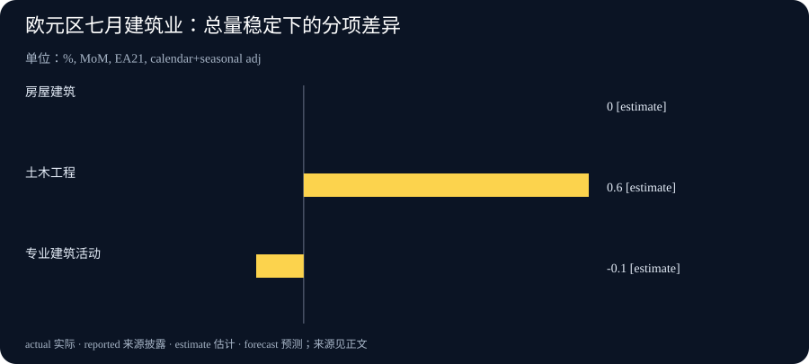

Daily Intelligence
2026-09-19 · Saturday · 历史日期正式补编。实际补编于 2026-09-21，采用 9 月 19 日以前已公开的一手材料；不把后续事件结果或补编时点倒填为当日新闻。文中“后续观察”以本期报道日期为基准，具体生成时间见 data.json。
Today’s Thesis｜从“有人在用”到“真正有用”，中间还缺一套证据
AI 的下一阶段竞争，不只在于谁能提供工具，还在于谁能解释它怎样进入工作、如何形成可认可的技能，以及收益究竟体现在哪里。研究机构扩充、培训与学分衔接，都在建设这种配套能力。但采用、学习和产出是三个不同层次：一次交互不能证明生产率提升，一张证书不能证明工作胜任，一组总量数据也不能代表所有行业。
Executive Summary｜把使用、资格与经济结果分开
1. Google 于 9 月 18 日宣布扩大 AI & Economy 研究团队，加入外部顾问、访问研究者与研究负责人，重点是理解技术扩散及经济影响，而非发布新模型。官方公告 2. 该项目的 ATLAS 为先前已发布的观察研究。本期把它作为方法背景，不把旧数据写成九月新调查，也不把平台交互数量当作独立使用人数。原始介绍 3. Google 宣布教师 AI 培训与不同学分、继续教育路径的合作。课程参与、数字徽章和学分获得并非自动等价。教育公告 4. Eurostat 公布七月建筑业产出：欧元区环比持平，欧盟下降 0.3%；总体稳定并不表示内部各项活动同步恢复。统计公报
本刊判断：读者可以把所有“AI 正在改变经济”的主张拆成三个问题——观察到了什么行为、通过什么机制影响工作、最终产出是否经过检验。没有必要否认早期信号，也没有必要让早期信号承担最终结论的证明责任。
AI Daily｜研究团队扩充，重要的是能否把行为数据变成可信解释
Google 公告称，Philippe Aghion 以学术顾问身份加入，Ajay Agrawal 加入访问研究项目；Anu Madgavkar 和 Daniel Rock 担任研究项目负责人。议题包括 AI 扩散、劳动力变化、企业生产率与科学发现。人员与研究议程的扩充是已宣布事项，不等于相关经济效果已经被证明。9 月 18 日公告
作为背景，Google 在 7 月 23 日介绍 ATLAS v1.0：使用来自 Gemini App、AI Mode 与 Gemini API 的一千五百万次聚合、去标识化交互。该范围不包括其所有 AI 产品与企业使用场景。这个数字的单位是交互，不是受访者，也不是全球就业岗位数量。方法背景
本刊方法分析：平台数据有独特价值，因为它能显示人们实际向工具提出了哪些请求，而不完全依赖事后回忆。但观察到一次使用，只能先说明某个行为发生过。它是否成功、是否节省了总时间、是否改变最终质量，仍需要与任务结果相联系，不能仅靠请求文本确定。
还有一个选择问题：能够接触并愿意使用某个平台的人，未必代表所有劳动者。语言、地区、付费能力、组织政策与工作性质都可能影响是否进入样本。即使样本很大，也不能自动消除这种覆盖差异；扩大数量与改善代表性是不同工作。
任务分类本身也需要检验。同样一句“帮我修改这段说明”，可能发生在学习、生产或娱乐中；模型能够辅助归类，但分类的不确定性应该被测量，而不是在形成漂亮图表时消失。比较不同时期时，还要知道分类标准、产品入口和可访问人群是否发生变化。
因此，下一步值得观察的是可复核方法、外部研究者可以检查的范围，以及能否把使用模式与实际结果谨慎关联。公司组织研究并不自动使结果无效，但商业关系、数据边界和无法观察的部分需要公开说明。权威姓名可以帮助形成研究能力，不能替代研究本身。
Business Daily｜培训开始接入学分体系，认定环节才是关键
Google 的 9 月 18 日教育公告介绍 AI Educator Series 与合作方的衔接：College Unbound 对应本科层次学分，公告明确称该路径可免费；ISTE 与 Dominican University 对应研究生层次学分，另有面向伊利诺伊教育人员的继续教育路径。文章还安排了 9 月 19 日 Badge-a-thon 活动。教育公告
这里应保留将来时和条件：公告不等于所有参与者已经获得学分，本科路径的免费表述也不能推广到所有研究生项目。数字徽章、结业记录、学分和职业资格续期分别由不同规则约束；本期没有核实个人是否符合申请条件，也不把这些合作写成在中国或其他地区自动认可。
本刊商业分析：短培训降低了开始学习的门槛，而与教育机构衔接，可能让学习记录进入更正式的认可体系。对参与者，价值不只是得到内容，也包括让已经投入的学习被别人理解；对课程提供者，挑战则从制作课程延伸到考核、记录、审核和持续更新。
如果认定只奖励观看或签到，就很难说明参与者能否在新场景中独立应用。相反，若要求提交一项真实工作成果、说明工具的局限，并能在没有示范答案时解决问题，学习记录才更接近能力证据。这里提出的是通用评价建议，不代表公告已披露上述考核设计。
机构采购 AI 培训时，可以先确定希望改善的具体任务，再选择课程，而不是先采购一批账号，然后寻找能证明“培训成功”的使用数字。培训后的业务变化还受到工具权限、数据质量和管理安排影响；课程本身不能解决所有组织障碍。
还有一种容易被低估的维护成本：工具更新后，学员是否仍能完成任务？是否知道新的安全限制和错误类型？一次培训的作用可能随环境变化而减弱，因此更值得投入的是持续练习与反馈机制，而不只是一次性的参与率。此处是对培训产品经营的分析，并非对任何合作项目质量的提前评价。
Macro Observation｜建筑业总体持平，内部并不平静
Eurostat 9 月 18 日的初步估计显示，七月建筑业产出经日历与季节调整后，欧元区环比为 0.0%，欧盟为 -0.3%。欧元区房屋建筑环比持平，土木工程增长 0.6%，专业建筑活动下降 0.1%。六月欧元区总量环比从此前的 -1.3% 修订为 -1.5%。统计公报与修订说明
本期图表仅采用七月欧元区同一口径的分项，不把欧盟总量或同比变化混入。数据描述产出数量的变化，不是房价、企业利润或新增订单；“持平”在这里是已公布的零变化，不代表缺失值。
本刊宏观分析：总量接近零，可能掩盖不同活动相互抵消。面向不同客户的企业，感受到的环境未必相同；依赖基础设施工程的供应商，与依赖房屋新建的供应商，不能只凭一个总量标题判断需求。但分项差异也不足以单独解释原因，还需要订单、工期、融资和项目构成等材料。
从经营角度看，需要区分“现在生产了多少”与“未来可能生产多少”。已开工项目可能延续过去的订单，当前产出不能直接替代新签合同。企业自己的订单账期、客户集中度和材料库存，仍是判断短期压力的重要依据；本期没有据此推算任何公司的收入。
这组数据也提醒我们，数字的参考期和发布日期必须一同保留。九月公布七月数据不意味着九月现场已经出现同样趋势，后来修订也可能改变早先判断。对历史日报，采用目标日期当时可获得的版本，比追求事后看起来最准确的叙述更重要。
Signal Dashboard｜每种证据只回答它能回答的问题
| 信号 | 已核实内容 | 尚不能证明 | 下一步需要的证据 |
|---|---|---|---|
| AI 经济研究 | 团队与议程扩充 | 经济效应已经实现 | 方法、样本边界与结果 |
| 平台采用数据 | 特定产品的交互观察 | 所有劳动者的生产率 | 覆盖差异、任务结果对照 |
| 培训学分衔接 | 合作路径已宣布 | 人人已获得学分或胜任岗位 | 条件、考核与认定规则 |
| 建筑业活动 | 同一版官方分项估计 | 所有企业需求同步回升 | 订单、后续数据及修订 |
对应来源见前文。不要把“暂时没有取得效果数据”理解为“效果为零”，也不要因为缺少反证就认为宣传中的效果必然成立。保留未知，是为下一步验证留出清楚的位置。
Deep Insight｜采用率、能力与产出之间，不是一条自动运行的传送带
以下为本刊机制分析。技术扩散经常被描述成一个顺滑过程：有了工具，人们开始使用；开始使用，就学会新能力；新能力积累起来，组织效率自然提高。这个叙述便于理解，却可能省略了真正决定成败的连接环节。工具可得、使用频繁、技能形成和业务改善，需要分别观察。
首先，使用可能只是尝试。一个人向工具提交许多问题，既可能因为工具有效，也可能因为前几次答案没有解决问题。频率是行为信号，却不是价值的单向刻度。若只奖励更多使用，团队可能增加没有必要的交互；若只追求更少使用，又可能阻止值得开展的学习。需要先知道希望改善的工作是什么。
其次，完成一项有辅助的任务，不必然意味着个人已经具备可迁移能力。有人能够跟着示范完成操作，却无法在条件稍有变化时辨认错误；也有人使用工具次数不多，但能够准确判断何时使用、如何复核和何时拒绝。这些差别很难仅靠登录或课时记录看出来。
因此，培训评价应同时关注作品和判断。作品可以显示一个结果达到了什么水平，解释过程则帮助判断学习者是否知道关键约束。合适的练习还应包含不适用场景，让学习者说明为什么不该交给工具处理。对涉及他人数据、财务或安全的任务，知道边界本身就是能力的一部分。
再往前一步，个人能力形成后，组织收益仍可能受阻。员工即使学会了更好的方法，如果没有访问必要资料的权限，或者后续审批仍要求重新手工录入，整体流程也未必改善。这不证明培训没有价值，而是说明瓶颈可能位于衔接处。评价时应把个人学习结果和组织环境分开，避免把所有责任都推给员工或工具。
从研究角度看，也需要防止比较对象悄悄变化。采用工具的人可能本来就更有经验，采用工具的任务可能本来就更容易量化；若没有处理这些差异，把两组结果直接相减，很容易得到误导性的“提升幅度”。比较设计越清楚，结论越可能被其他团队检查和使用。
从管理角度看，不一定每个试点都要开展复杂实验，但至少可以保留基线。选择一项常见任务，记录原方法的耗时、质量和失败情形；引入工具后用相近任务比较，并把人工复核纳入。若样本很少，就将结论写成试点发现，而不是组织整体规律。这样的朴素记录，往往比一个没有分母的高增长数字更有帮助。
外部证书和统计指标的作用，也应放在这一链条中理解。证书可以降低他人了解学习经历的成本，统计可以帮助发现总体模式；但它们并不代替特定岗位的验收，也不代替某家企业的业务记录。把通用信号与具体决定连接起来，需要额外的信息，而不是只重复信号本身。
最后，需要给反例一个位置。如果一项工具对某种工作没有帮助，记录失败条件并不妨碍推进技术；它能减少下一批使用者走同样的弯路。如果一项培训只对部分人有效，也可以据此调整内容、前置知识和支持方式。真正成熟的采用，不是所有人都必须给出正面评价，而是组织能从不同结果里学习。
本期的核心建议，是为每一层写下对应的观察：采用看实际行为，学习看可迁移表现，流程看完整交付，经济效果看与合适基线的比较。让这些证据互相连接，但不互相冒充，才能更可靠地判断 AI 的价值正在何处出现、又被什么条件限制。
Tomorrow Watch｜以 9 月 19 日当时信息列出观察项
- 研究：观察 AI & Economy 项目后续披露的方法与数据范围，不预设扩大团队后会得到某种特定结论，也不将七月 ATLAS 当作九月新调查。
- 教育：9 月 18 日公告安排了次日 Badge-a-thon，本期只记录已公布安排；没有核实活动完成结果、实际获学分人数或所有项目费用，不事后补写成功数字。
- 宏观：Eurostat 公报标注下一次建筑业数据发布为 10 月 20 日，这不是 9 月 20 日的确定事件。周末没有新数据时，保留当前版本和修订说明。后续日程来源
这些是报道日期视角下的观察问题，不是对明天必然发生事项的承诺。补编稿保留这种时间边界，避免用后来知道的结果让过去的判断看起来过分确定。
One Chart｜欧元区七月建筑业分项环比

| 分项 | 2026 年 7 月环比 | 数据状态 |
|---|---|---|
| 房屋建筑 | 0.0% | 官方初步估计 |
| 土木工程 | +0.6% | 官方初步估计 |
| 专业建筑活动 | -0.1% | 官方初步估计 |
范围为欧元区 EA21，采用日历及季节调整后的产出量环比。estimate 指统计估计，不是本刊预测；零值是已公布的持平，不是缺失填零。各分项权重不同，不能把三项百分比简单平均来重建总量，也不能由它们计算房价涨跌。同版公报与表格
Quote of the Day｜认真理解反方，才能真正理解自己的判断
“He who knows only his own side of the case, knows little of that.”
— John Stuart Mill
中文：只了解自己这一方论点的人，对这一方也知之甚少。
出处：《On Liberty》第二章 Of the Liberty of Thought and Discussion，第 67 页。原文讨论理解不同论据对判断的重要性，本期只节引这一句。原文
本刊解读：检查一项效率主张时，主动寻找它可能不成立的情形。反例的价值，不是为了否定所有尝试，而是帮助识别哪些条件必须先满足。
Action Items｜用一项真实任务检验学习是否发生
1. 给正在采用的 AI 工具分别记录使用行为、任务质量和总耗时，不用登录次数代替业务结果，也不把多人多次交互写成人数。 2. 选择一项培训后的实际练习，要求参与者提交成果并说明限制；核实学分或资格的接收方规则，不假定徽章自动等同正式认定。 3. 阅读经营统计时，在图表旁保留参考期、发布日期、地区、调整口径和修订状态；补编历史分析时不混入当时尚未公开的信息。